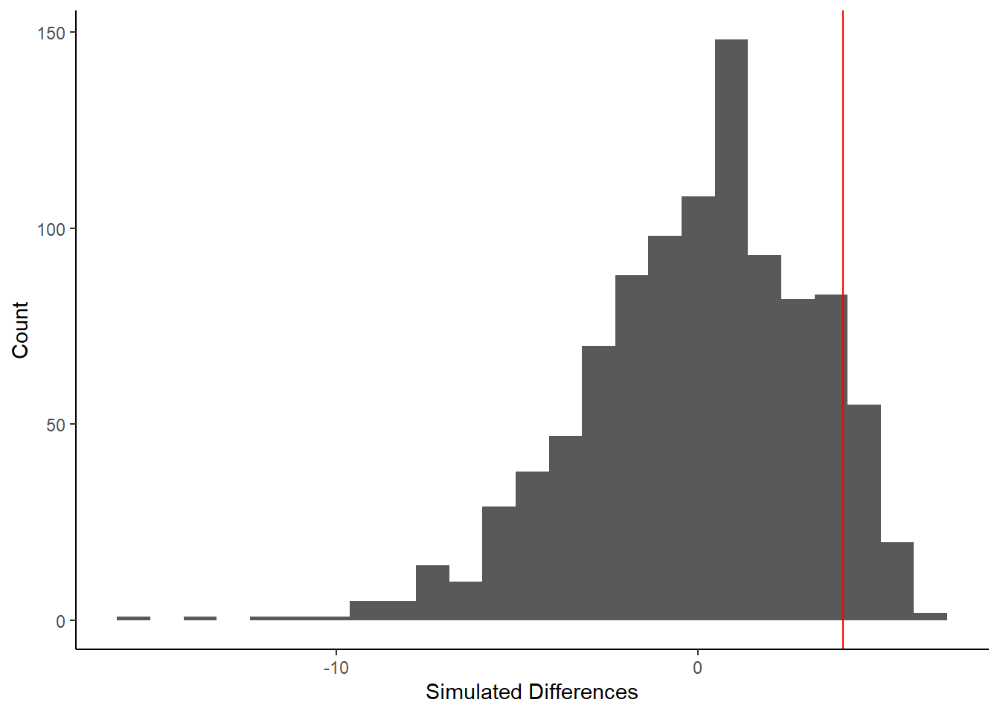

fix_columns <- function(data, x) {
data |>
mutate(x = ifelse({{ x }} == "M", NA, {{ x }}),
x = ifelse({{ x }} == "T", 0, {{ x }}),
x = ifelse({{ x }} == "T*", NA, {{ x }}),
x = parse_number({{ x }}))
}Mini-Project 2
March 22nd, 2024
Snowfall in 2023-2024
Source: Minnesota DNR
Introduction
The amount of snowfall this year so far (from the months of October through February) has amounted to 14.3 inches, and has seemed like much less than usual. I decided for this project to look through Minnesota’s Department of Natural Resources data in the Twin Cities and run statistical tests comparing this year to other years. I chose to run simulations to find where this year’s snowfall lies in comparison to other years to see if it is truly statistically less snow than other years.
Before doing any analysis on this data, it needed to be cleaned. The columns were mostly character vectors, with some double vectors. This made it difficult to pivot, parse, and convert missing data to NAs; each step had to be done to each column instead of the whole data set at once. The values ‘T’ for trace needed to be converted to zeros, and ‘M’ for missing needed to be changed into NA values. Finally, parse_number() changed the character vectors into double vectors, allowing R to find the mean and other statistics. This is the function I attempted to use:
This first graph provides an initial look at how much snow the Twin Cities have gotten each year since 1884.
The data seems to be right-skewed, with possible high outliers. Of course, this data would change with inclusion of the months March and April, but as those haven’t happened yet in 2024, they can’t yet be compared to this year.
Simulation
This is the code I used to run a simulation and create a randomized data set of snowfall in 140 years.
First, this chunk shows the true difference between 2023-2024 season’s snowfall, and the snowfall each season from 1884-2023. This is an observed difference of about 4 inches each month. This means that on average, this winter season has had 4 inches less snow than other months on average. This is my alternate hypothesis.
snowfall_summary <- snowfall |>
group_by(year_group) |>
summarize(mean_snowfall = mean(snow_per_month))
observed_diff <- snowfall_summary[[2]][2] - snowfall_summary[[2]][1]The next step in this simulation is to create simulated data for each year grouping: both 2023-2024 and 1884-1885 through 2022-2023. This multiplies our original observed difference by 1000, assuming that the true difference is zero. This is the null hypothesis, in contrast to my alternate hypothesis in the chunk above.
simulated_diffs <- vector("double", 1000)
for(i in 1:1000) {
snowfall_summary <- snowfall |>
mutate(year_group = sample(year_group)) |>
group_by(year_group) |>
summarize(mean_snowfall = mean(snow_per_month))
simulated_diffs[[i]] <- snowfall_summary[[2]][2] - snowfall_summary[[2]][1]
} Results
Using this new randomized data, I created a histogram showing the spread of the simulated differences between this season and all other seasons, assuming the null hypothesis. The red vertical line represents the difference of 4 from this year.

Using the simulated data, we can pull the p-value of this year’s snowfall to see if it falls within the upper 5% of the spread.
The p-value is 0.182.
Discussion
Statistically Insignifiant Results
Because of the p-value this simulation produced at a significance level of 0.05, the amount of snow this year would not be considered significantly less than usual. About 18% of the time that this simulation is run, a difference of 4 inches per month or more will be observed. Therefore, this season’s amount of snowfall isn’t statistically unusual.
Areas for Future Research
There are a few changes I would make to this simulation if I were to run it again, or if I had more time.
Incomplete Data
This graph shows snowfall for the whole year, not just the months October through February.
One potential shortcoming of the simulation I created is that the data doesn’t cover months that often get large amounts of snowfall. If I were to run this again in two months with data from March and April, the results might change. As this graph shows, there are less gaps when including all of the months, and it would increase the mean, and alter the standard deviation.
Other Applications
I would also be interested in running this test for last year’s snowfall! In 2022-2023, the Twin Cities got 90.3 inches of snow. From the histogram, this seems like one of the higher years on record. Now that I have this simulation set up, it would be easy to alter it to run different tests, both on this data set, and on others I find.